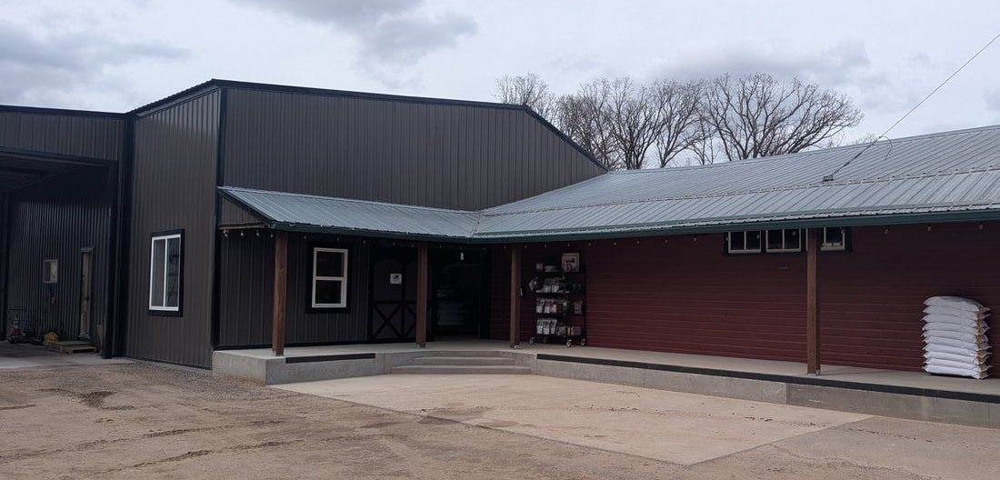

Store hours
| Monday – Friday | 8:00 AM – 5:00 PM |
| Saturday | 9:00 AM – 12:00 PM |
| Sunday | Closed |
Get in touch
- Phone715-357-3350
- Address968 14th Ave (Hwy 8)
Poskin, WI 54812 - FacebookPoskin Feed Store
Payment
We accept cash, check, and all major credit and debit cards.
Save 2% when you pay with cash or check.

Directions
We're right on U.S. Highway 8 in Poskin, between Barron and Almena in Barron County. Look for the PFS sign on the mill.